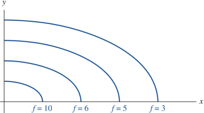

Optimization problems with constraints - Lagrange multipliers
We investigate now optimization problems with constraints in the form of inequalities and equalities. Lagrangian optimization introduced in 1797 by Lagrange, computes the maximum of minimum of a function f of several variables subject to one or more constraint functions denoted gi.
Consider the fundamental problem of maximising a function of two variables subject to a single constraint:
Find (x*,y*) yielding max f from among the points (x,y) on the curve g(x,y) = k
where g(x,y) = k is the implicit equation of a given curve. Suppose that the parametric equations describing the g = k curve are known, r(t) = (x(t), y(t)), such that
g(x(t), y(t)) = k, ∀t
Differentiating this equation using the chain rule yields
0 = d/dt [g(r(t)] = ∇g ⋅ dr/dt = 0
If the parameter t si taken to represent time, the geomtric interpretation of this equation is that the "velocity" vector dr/dt (which is tangent to the curve r(t)) is perpendicular to the level-curve g = k since the gradient ∇g is orhogonal to contours of constant function-value. Substituting x(t), y(t) into f(x,y) yields a function of a single variable
F(t) = f(x(t), y(t))
that is parametrised along the curve g = k. Finding the critical ponints of F(t) with respect to t gives the critical points of f on g,
dF/dt = 0 ⟶ dF/dt = ∇f ⋅ dr/dt = 0
Hence, the chanin rule show that at a critical point, ∇f is also orthogonal to the velocity vector. In two dimension, this forces the two gradients to be a scalr multiple of each other and then we obtain
∇f = λ ∇g
where λ (called the Lagrange multiplier) is another unknown that needs to be determined. In component form, the resulting set of equations of three variables in the three unknowns is
fx(x*, y*) − λgx(x*, y*) = 0
fy(x*, y*) − λgy(x*, y*) = 0
g(x*, y*) = k
A typical solution strategy for solving the equations is to first solve the ∇f = λ ∇g equations to obtain x(λ), y(λ), and then substitute these into g(x(λ), y(λ)) = k to obtain a final equation for the values of λ.
We begin by representing the objective function f by a contour map, wich might look something like this
Remember how this two-dimensional map displays a function of two variables. All point on the lower-left hand curve, f(x,y) = 10. All points on the next curve over have f(x,y) = 6, and so on. You might reasonably conclude that if our goal is to maximixe this function, we should move down and left; if our goal is to minimize the function, we should move up and right.
Remember also that the gradient ∇f points perpendicular to these contour lines at all points. When we move perpendicular to the gradient the directional derivative is zero, which means the function doesn't change, which defines a contour line. Now we add the constraing g(x,y) = k to our drawing. This constraint is a single curve that represents one contour line of the function g(x,y). The goal is to follow along the curve g = k until we reach the highest possible value of f.
The key insight is that, at that point, the two contour lines will be parallel. If they are not parallel, you are still cutting through contour line of f, moving up to higher values. Because the two curve are parallel at this point, their gradient vectors are also parallel. This is captured in the Lagrange multiplier relation:
∇f(x*,y*) = λ*∇g(x*,y*), λ* ∈ ℝ
where λ is a scalar.
Supponiamo che il nostro punto di estremo (x*, y*) sia regolare per il vincolo g(x, y) = c cioè:
∇g(x*,y*) ≠ (0,0)
In tal caso, per il Teorema di Dini, l'equazione di vincolo definisce implicitamente un arco di curva regolare, passante per (x*, y*). La condizione necessaria affinché questo punto sia di estremo per la f vincolata, analoga al teorema di Ferma, è dunque che sia nulla la derivata direazionale di f nella direzione tangente alla curva descritta dal vincolo:
Dt f(x*, y*) = 0
con t, versore tangente al vincolo. Questa infatti è l'unica direazione ammissibile. Per la formula del gradiente ciò significa
∇f(x*,y*) ⋅ t = 0 (6.0)
ossia l'ortogonalità tra ∇f (x*, y*) e t. Ricoridano che anche il vettore ∇g (x*, y*) è ortogonale all'insieme g(x,y) = k, perciò i due vettori ∇f (x*, y*) e ∇g (x*, y*) sono paralleli. La conclusione è espressa dal seguente
Teorema 6.1- Se (x*, y*) è un punto di estremo vincolato per f sotto il vincolo g(x, y) = c e ∇g(x*, y*) ≠ 0, allora esiste λ* tale che
∇f(x*,y*) = λ*∇g(x*,y*), λ* ∈ ℝ
the nuber λ* is called Lagrange multipliers.
Se scriviamo l’equazione vettoriale ∇f = λ∇g in termini delle sue componenti e insieme l’equazione g = k di appartenenza al vincolo, troviamo il sistema
In altre parole, i punti di massimo (e di minimo) della funzione f(x, y) con il vincolo g(x, y) = k, sono punti critici per la funzione di tre variabili
L(x,y,λ) = f(x,y) −λ[g(x,y) − c]
indeed
∂xL = ∂x f − λ∂xg
∂yL = ∂y f − λ∂yg
∂λL = -(g -c)
La variabile λ prende il nome di moltiplicatore di Lagrange, così come si chiama metodo dei moltiplicatori di Lagrange la ricerca degli estremi di f con il vincolo g = k attraverso la risoluzione del sistema.
Alla luce delle considerazioni fatte finora, si può indicare il seguente processo di ricerca degli estremi vincolati, noto come metodo dei moltiplicatori di Lagrange.
Si isolano gli eventuali punti non regolari dell'insieme g(x,y) = c, che si esaminano a parte.
Si cercano i punti critici liberi della lagrangiana, cioè le soluzioni del sistema 6.1.
Si determina la natura dei punti critici.
Vediamo un esempio:
Esempio 1. Supponiamo di voler massimizzare la funzione f(x,y) = x+y, soggetta al vincolo x2+y2 = 1.
Il vincolo è dato dalla circonferenza di raggio unitario centrata nell'origine, rappresentato dalla funzione
g(x,y) = x2 + y2 − 1
da cui la Lagrangiana:
L(x,y,λ) = f(x,y) − λ ⋅ g(x,y) = x + y + λ(x2 + y2 − 1)
il cui gradiente è:
∇L(x,y,λ) = (1 − 2λx, 1 − 2λy, x2 + y2 − 1)
si ha dunque il seguente sistema, ∇L(x,y,λ) = 0:
1 − 2λx = 0
1 − 2λy = 0
x2 + y2 − 1 = 0
Dalle prime due equazioni si ottiengono le soluzioni:
x = y = 1/2λ, λ ≠ 0
che sostituite nell'ultima equazione:
1/4λ + 1/4λ −1 = 0
thus
λ = ± 1/2λ
i punti stazionari della Lagrangiana sono dunque
(√2/2, √2/2, −1/√2), (−√2/2, −√2/2, 1/√2)
che valutati nella f:
f(√2/2, √2/2) = √2, f(−√2/2, −√2/2) = −√2)
ora essendo l'insieme:
E0 = {(x,y) ∈ ℝ2 : g(x,y) = 0}
un insieme chiuso e limitato ed f continua, il Teorema di Weierstrass assicura l'esistenza di un punto di massimo e uno di minimo, in questo esempio rispettivamente √2 e √-2.
Significato dei moltiplicatori di Lagrange
Il moltiplicatore di Lagrange λ*, non è un semplice elemento accessorio, ma ha un significato notevole, che segnaliamo in modo un po' informale. Un'informazione importante in un problema di ottimizzazione vincolata è la misura della sensibilità del valore estremo della funzione obiettivo (massimo o minimo) quando si varia la costante b che appare nell'equazione del vincolo. Pensa, ad esempio al caso della produzione ottima, b rappresenta il limite di budget ed è di indubbio interesse stabilire di quanto varia la produzione massima variando tale limite. Supponiamo, che per ogni b in un intervallo, Ib = (b1, b2) si trovi un valore ottimo, ad esempio di massimo, per la funzione f, sotto la condizione g(x,y)=b. Per sottolineare la dipendenza da b, scriviamo
x*=x(b) y*=y*(b) per il punto di massimo
λ* = λ*(b) per il moltiplicatore associato
M(b) = f(x*(b), y*(b)) per il massimo vincolato di f
Valgono quindi le condizioni del primo ordine:
fx(x*(b), y*(b)) = λ* (b) gx(x*(b), y*(b)) (8.4)
fy(x*(b), y*(b)) = λ* (b) gy(x*(b), y*(b)) (8.5)
g(x*(b), y*(b))=b
per ogni b nell'intervallo Ib.
Derivando l'equazione del vincolo si ha
gx(x*(b), y*(b)) dx*/db + gy(x*(b), y*(b)) dy*/db = 1
Moltiplicando λ*(b) entrambi i membri di questa equazione e, usando (8.4) e (8.5) otteniamo
fx(x*(b), y*(b)) dx*/db + fy(x*(b), y*(b)) dy*/db = λ*(b) (8.7)
D'altra parte abbiamo anche:
M'(b) = fx(x*(b), y*(b)) dx*/db + fy(x*(b), y*(b)) dy*/db
per cui della (8.7) si deduce la formula
M'(b) = λ*(b)
Il moltiplicatore λ*(b) rappresenta dunque la velocità di variazione del valore ottimo rispetto a b. In termini economici questo indica di quando a umenta la produzione ottima in conseguenza di un aumento unitario di budget: ΔM ≈ Δb.